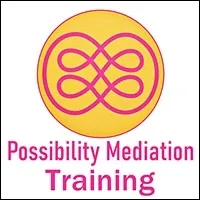
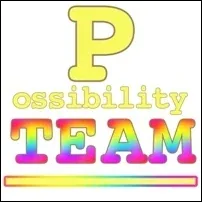
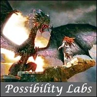
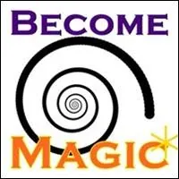
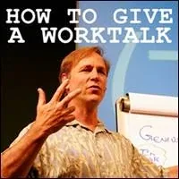
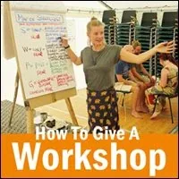

Possibility
MEDIATION
Training
- …
by Possibility Management
Possibility
MEDIATION
Training
- …
by Possibility Management
- There are answers to questions- you have not yet thought to ask.- Become the source of transformationally powerful questions
- Possibility Mediation - Possibility Mediators offer their sword of clarity with compassion as they navigate through conflict to higher levels of responsibility. This clarity changes what is possible for their clients in conflict right now. - POSSIBILITATOR SPECIALTY- Possibility Mediationis a set of skills that helps organisations, families, intimacy partners, communities, and projects evolve beyond their conflicts so that the energy can flow to what they really want to create with each other.- Possibility Mediation is a - next culturespecialty in- Possibilitator Training.- THE VALUE OF POSSIBILITY MEDIATION- Clarity, Radical Responsibility, Evolution, Creativity and Love are the key Bright Principles of Possibility Mediation. - Possibility Mediation shows and opens gateways, doorways or slides into new spaces within the clients, so that these new territories within them can be re-owned and authentically used on the path into their initiated adulthood. From where people can navigate into extra-ordinary spaces in their relationships, at their work spaces and while they are creating Next Culture Gaian gameworlds.
- There are ways to unfold potentials- you don't even know that you have.
- Possibility MEDIATION Training - You can train your perceptions, your listening, and your speaking, and your space navigation skills to provide both - non-linearand- unreasonableopportunities for- healingand- transformation.- This is Possibility Mediation. - 99% of what is possible for your right now is invisible to you. - THE TRAINING IS FOR- Meidators, Coaches, Consultants or other Spaceholders who want to hold Possibility Mediation Sessions for clients. - Possibility Mediation Sessions have a wide spectrum of possibilities to open the next evolutionary door for your clients. - It includes Matrix building by offering clarity about problem ownership, landing distinctions, accompanying through Phase 1 & 2 of Feelings work, navigating Emotional Healing Processes, holding space for Initiatory Processes, Memetic Engineering, Self Surgeries, ... - For couples and groups applying Torus Technologies like Frying pan, The Wok, and a variety of group processes like M.E.S.S. Processes, Village Process, and more.
- ## Love and CLARITY CREATE PATHS FOR EVOLUTION IN CONFLICT. THE RESULTS ARE MAGIC. You can develop your SKILLS TO CREATE magic.
- ## HOW TO APPLY- #### The way into the Possibility Mediation Training1- Sign up via the form that will be provided here soon. 2- Conversaview via Zoom - Julia will reach out to you to set up a call 3- Get accepted - You will get a confirmation mail 4- Investment - You confirm your participation with your payment
- SO MUCH More is possible than what modern culture offers.
- About the Training - HOLD THE HORSES! THE TRAINING IS BEING DESIGNED AS YOU READ.- Start:- End:+++- every- xxx- (New Zealand)- +++
- CONTENT- 6x 2h30 sessions
- 3x 1h30 supervision sessions
- 1x 1h30 Q&A session
- Weekly challenges, experiments, and support on the Telegram group
- Optional single Coaching session with- Julia Neumann(additional investment/120 NZD/EUR per session)
- You will form 3Cells, in which you will support each other with Emotional Healing Processes to support your Training (EHPs), Feedback & Coaching. The 3Cell function as your homegroup throughout the training time.
- You will practice holding space for Mediation Sessions in the so-called- EHP Dojo, which will be the foundation for the supervision sessions. You practice within the EHP Dojo, in your 3Cell, or with friends and colleagues.
- PREREQUISITE- Participated in at least one- Expand the Box Training
- Transformed through several Possibility- Labs
- Participated in at least one- Rage Club
- Participated in at least one Fear Club
- You have a necessity to deliver Mediation sessions
- Or you are already offering Mediation Sessions
- You want to deliver Possibility Mediation Sessions
After the training, you will gain access to the Possibilitator Training Speciality of Possibility Mediation, where you can ongoingly practice, research, and develop the Gameworld of Possibility Mediation with other Spaceholders/Mediators.- INVESTMENT:Sliding scale 350-500 EUR/ 400-600 NZD/USD.
You choose the value you want to exchange.- LIMIT 20 participants.- If you think you qualify, you may apply.Aotearoa (New Zealand) and UK
- now to get yourself ready - do experiments! - The point of experimenting is to increase your ability to create useful results for your Client.- All preparations are Experiments.- A Possibility Coach is an Experimenter. - First Preparation: Earn Over 1000 Matrix Points in- StartOver.xyzAnd Bring Others With You On Each Journey- Matrix Code - PMTRAINI.01 - Do Whatever It Takes to Integrate Into Your- ThoughtwareALL The Distinctions In The Online Distinctionary- http://distinctionary.xyz- Matrix Code - PMTRAINI.02 - Shift Into Experiential Reality - Refuse To Leave It- Matrix Code - PMTRAINI.03 - Do ALL The S.P.A.R.K. Experiments In A Weekly Online-or-Offline S.P.A.R.K.- Study Group- Matrix Code - PMTRAINI.04- There are over 211 S.P.A.R.K. Experiments are available online. - Here is info for a sample S.P.A.R.K. Experiment Study Group: - https://www.facebook.com/events/528640891399315/?event_time_id=528640898065981- Or figure out how to make your own.
- Do ALL The S.P.A.R.K. Experiments In A Weekly Online-or-Offline S.P.A.R.K.- Study Group- Matrix Code - PMTRAINI.04- There are over 211 S.P.A.R.K. Experiments are available online. - Here is info for a sample S.P.A.R.K. Experiment Study Group: - https://www.facebook.com/events/528640891399315/?event_time_id=528640898065981- Or figure out how to make your own.  - Participate In Approximately One Authentic Adulthood Initiatory Process Each Month Or So - At Least Six Initiations Per Year- Matrix Code- The Path never ends. - Create For Yourself A Transformation 'Pathport' Listing All 51 Core Adulthood Initiations, Each With A Place For Stamp / Signature / Date- Matrix Code - Fill up your 'Pathport' with actual stamps / signatures / and dates of your Authentic Adulthood Initiatory Processes. - Cruising through your 'Pathport' will consistently help you find out where you are.
- Participate In Approximately One Authentic Adulthood Initiatory Process Each Month Or So - At Least Six Initiations Per Year- Matrix Code- The Path never ends. - Create For Yourself A Transformation 'Pathport' Listing All 51 Core Adulthood Initiations, Each With A Place For Stamp / Signature / Date- Matrix Code - Fill up your 'Pathport' with actual stamps / signatures / and dates of your Authentic Adulthood Initiatory Processes. - Cruising through your 'Pathport' will consistently help you find out where you are.  - Enter The Experiential Clarity Of Conscious Feelings - And Refuse To Leave It- Matrix Code
- Enter The Experiential Clarity Of Conscious Feelings - And Refuse To Leave It- Matrix Code  - Completely Decontaminate Your Adult Ego State From Parent Ego State, Child Ego State, Gremlin Ego State, and Demon Ego State- Matrix Code - Live In The Extraordinary World Of Using Your 13 Energetic Tools- Matrix Code
- Completely Decontaminate Your Adult Ego State From Parent Ego State, Child Ego State, Gremlin Ego State, and Demon Ego State- Matrix Code - Live In The Extraordinary World Of Using Your 13 Energetic Tools- Matrix Code  - Participate In A Minimum of 3- Expand The BoxTrainings Delivered By Different PM Trainers and Already Be Delivering Offline- Expand The BoxTrainings- Matrix Code - Read EVERY Book On The- Possibilitator Recommended Book List- Matrix Code - PCTRAINI.00 - Watch EVERY Film On The- Possibilitator Training Films List(watch 2 or 3 per week, WITH OTHERS, and Discuss the Story and Distinctions Afterwards)- Matrix Code - PCTRAINI.00
- Participate In A Minimum of 3- Expand The BoxTrainings Delivered By Different PM Trainers and Already Be Delivering Offline- Expand The BoxTrainings- Matrix Code - Read EVERY Book On The- Possibilitator Recommended Book List- Matrix Code - PCTRAINI.00 - Watch EVERY Film On The- Possibilitator Training Films List(watch 2 or 3 per week, WITH OTHERS, and Discuss the Story and Distinctions Afterwards)- Matrix Code - PCTRAINI.00

- Hold Space for Your Own Weekly 2 Hour Online-or-Offline Possibility Team- Matrix Code - PCTRAINI.00- Make sure that any online Possibility Team you have it is listed at - http://possibilityteam.org- http://possibilitymanagement.org - Hold Space For A Weekly Study Group For Reading Together And Discussing A Book From The- PM Recommended Reading List- Matrix Code - PCTRAINI.00 - Bring Others Through Technopenuriaphobia Healing Processes- Matrix Code - PCTRAINI.00 - Ongoingly Do 3-3-3 Anger Until You Stellate Your Anger- Matrix Code - PCTRAINI.00
- Ongoingly Do 3-3-3 Anger Until You Stellate Your Anger- Matrix Code - PCTRAINI.00 - Ongoingly Do 3-3-3 Fear Until You Stellate Your Fear- Matrix Code - PCTRAINI.00
- Ongoingly Do 3-3-3 Fear Until You Stellate Your Fear- Matrix Code - PCTRAINI.00 - Ongoingly Deliver Rage Club Online or Offline- Matrix Code - PCTRAINI.00- Train up transformational warrioresses and warriors for building bridges to next culture - archiarchy. - Make sure your Rage Club gets listed at - http://rageclub.org
- Ongoingly Deliver Rage Club Online or Offline- Matrix Code - PCTRAINI.00- Train up transformational warrioresses and warriors for building bridges to next culture - archiarchy. - Make sure your Rage Club gets listed at - http://rageclub.org - Live Your Moment-To-Moment Life with Your Point Of Origin Located In Possibilitator First Position- Matrix Code - PCTRAINI.00 - Observe Yourself Observing Yourself- Matrix Code - PCTRAINI.00 - Notice What You Notice With- Matrix Code - PCTRAINI.00
- Live Your Moment-To-Moment Life with Your Point Of Origin Located In Possibilitator First Position- Matrix Code - PCTRAINI.00 - Observe Yourself Observing Yourself- Matrix Code - PCTRAINI.00 - Notice What You Notice With- Matrix Code - PCTRAINI.00 - Discover The Purpose of Each Noticing And Each Creation - Yours And Others'- Matrix Code - PCTRAINI.00
- Discover The Purpose of Each Noticing And Each Creation - Yours And Others'- Matrix Code - PCTRAINI.00
- Participate In A Minimum of 10- Possibility LabsDelivered By Many Different PM Trainers- Matrix Code - PCTRAINI.00 - Open Your Pearl And Use It As A Map In Your Daily Life- Matrix Code - PCTRAINI.00 - Identify Every Emotion (yours and others') - Use Every Emotion You Experience As A Doorway To Your Own Emotional Healing Processes.- Matrix Code - PCTRAINI.00 - Memorize The Reactivity Website Distinctions - Catch Every Reaction In Yourself And Others- Matrix Code - PCTRAINI.00 - Complete Your Distilling Destiny Process: Choose your Bright Principles, Live As Your Bright Principles In Action- Matrix Code - PCTRAINI.00
- Identify Every Emotion (yours and others') - Use Every Emotion You Experience As A Doorway To Your Own Emotional Healing Processes.- Matrix Code - PCTRAINI.00 - Memorize The Reactivity Website Distinctions - Catch Every Reaction In Yourself And Others- Matrix Code - PCTRAINI.00 - Complete Your Distilling Destiny Process: Choose your Bright Principles, Live As Your Bright Principles In Action- Matrix Code - PCTRAINI.00 - Complete Your Hidden Purpose Process: Live With Your Conscious Gremlin At Your Side- Matrix Code - PCTRAINI.00 - Make Your Website- Matrix Code - PCTRAINI.00
- Complete Your Hidden Purpose Process: Live With Your Conscious Gremlin At Your Side- Matrix Code - PCTRAINI.00 - Make Your Website- Matrix Code - PCTRAINI.00 - Build Your Circle To 1000+ People- Matrix Code - PCTRAINI.00 - Send Out Your Monthly Newsletter To 1000+ People In Your Circle- Matrix Code - PCTRAINI.00 - Become A Global Citizen- Matrix Code - PCTRAINI.00 - Become An Unceasing Source Of Next Culture: Archiarchy- Matrix Code - PCTRAINI.00
- Build Your Circle To 1000+ People- Matrix Code - PCTRAINI.00 - Send Out Your Monthly Newsletter To 1000+ People In Your Circle- Matrix Code - PCTRAINI.00 - Become A Global Citizen- Matrix Code - PCTRAINI.00 - Become An Unceasing Source Of Next Culture: Archiarchy- Matrix Code - PCTRAINI.00
- Become Magic- Matrix Code - PCTRAINI.00 - Escape Your 8 Prisons... and Stay Out- Matrix Code - PCTRAINI.00
- Escape Your 8 Prisons... and Stay Out- Matrix Code - PCTRAINI.00 - Do Your 7 Self Surgeries And Deliver Them As Paid Single Coachings- Matrix Code - PCTRAINI.00- Rewire Fear - Trust Replacement Surgery - Brain Splits
- Do Your 7 Self Surgeries And Deliver Them As Paid Single Coachings- Matrix Code - PCTRAINI.00- Rewire Fear - Trust Replacement Surgery - Brain Splits  - Do Your 11 Floor Processes And Deliver Them As Paid Single Coachings- Matrix Code - PCTRAINI.00 - Move Your Point Of Origin To The Extraordinary Context Of Radical Responsibility- Matrix Code - PCTRAINI.00
- Do Your 11 Floor Processes And Deliver Them As Paid Single Coachings- Matrix Code - PCTRAINI.00 - Move Your Point Of Origin To The Extraordinary Context Of Radical Responsibility- Matrix Code - PCTRAINI.00
- Give One or Two WorkTalks Every Month (online-or-offline)- Matrix Code - PCTRAINI.00
- Give One or Two Workshops Every Month (online-or-offline)- Matrix Code - PCTRAINI.00 - Learn And Deliver Paid Chairwork Sessions- Matrix Code - PCTRAINI.00 - Learn And Deliver Paid Memetic Engineering Sessions- Matrix Code - PCTRAINI.00
- Learn And Deliver Paid Chairwork Sessions- Matrix Code - PCTRAINI.00 - Learn And Deliver Paid Memetic Engineering Sessions- Matrix Code - PCTRAINI.00 - Shift Your Identity To Possibility Coach- Matrix Code - PCTRAINI.00 - Deliver Approximately 10 Paid Single Coachings Each Week- Matrix Code - PCTRAINI.00 - Quit Your Corporate Job- Matrix Code - PCTRAINI.00 - Become Money - i.e. Exchange Value Instead Of Money- Matrix Code - PCTRAINI.00
- Shift Your Identity To Possibility Coach- Matrix Code - PCTRAINI.00 - Deliver Approximately 10 Paid Single Coachings Each Week- Matrix Code - PCTRAINI.00 - Quit Your Corporate Job- Matrix Code - PCTRAINI.00 - Become Money - i.e. Exchange Value Instead Of Money- Matrix Code - PCTRAINI.00 - Start And Run A Growness (in contrast to a Business)- Matrix Code - PCTRAINI.00 - Jack-In To Your Archetypal Lineage: A Public Process Navigated By Fully Experienced Lab Trainer- Matrix Code - PCTRAINI.00 - Become A Riftwalker- Matrix Code - PCTRAINI.00
- Start And Run A Growness (in contrast to a Business)- Matrix Code - PCTRAINI.00 - Jack-In To Your Archetypal Lineage: A Public Process Navigated By Fully Experienced Lab Trainer- Matrix Code - PCTRAINI.00 - Become A Riftwalker- Matrix Code - PCTRAINI.00 - Become A Specialist In Torus Meeting Technologies (Circular Org Charts)- Matrix Code - PCTRAINI.00
- Become A Specialist In Torus Meeting Technologies (Circular Org Charts)- Matrix Code - PCTRAINI.00 - Make a- PirateTeam With 3 or 4 People People Close To You In Your Gameworld- Matrix Code - PCTRAINI.00- Make sure Your Team has all - 4 Brainsand all- 4 Archetypal Lineagesso Your Team has full intelligence available for the- Journey.
- Make a- PirateTeam With 3 or 4 People People Close To You In Your Gameworld- Matrix Code - PCTRAINI.00- Make sure Your Team has all - 4 Brainsand all- 4 Archetypal Lineagesso Your Team has full intelligence available for the- Journey. - Build Your Transformational Gaian Gameworld- Matrix Code - PCTRAINI.00 - Journey Into The Earth Once Each Month With Real Questions- Matrix Code - PCTRAINI.00
- Build Your Transformational Gaian Gameworld- Matrix Code - PCTRAINI.00 - Journey Into The Earth Once Each Month With Real Questions- Matrix Code - PCTRAINI.00 - Become A Specialist At Setting Context For And Navigating To The Extraordinary - Refuse To Desist- Matrix Code - PCTRAINI.00
- NOTE:This website is a- Bubble in the Bubble Map- StartOver.xyz- doorway- experiments- upgrade your thoughtware- point of origin- create- possibility- knowledge- about. Your- thoughtware- with. When you- change your thoughtware- liquid state- reorganizes- feelings- emotions- upgrading your thoughtware- build matrix- consciousness (archived — not captured)- low drama- reactivity- collectively build- responsibly- PMTRAINI.00to log your Matrix Point for reading this website on- StartOver.xyz
- Become A Specialist At Setting Context For And Navigating To The Extraordinary - Refuse To Desist- Matrix Code - PCTRAINI.00
- NOTE:This website is a- Bubble in the Bubble Map- StartOver.xyz- doorway- experiments- upgrade your thoughtware- point of origin- create- possibility- knowledge- about. Your- thoughtware- with. When you- change your thoughtware- liquid state- reorganizes- feelings- emotions- upgrading your thoughtware- build matrix- consciousness (archived — not captured)- low drama- reactivity- collectively build- responsibly- PMTRAINI.00to log your Matrix Point for reading this website on- StartOver.xyz